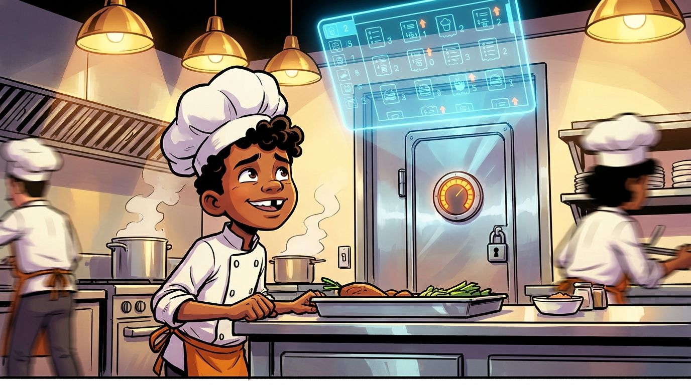
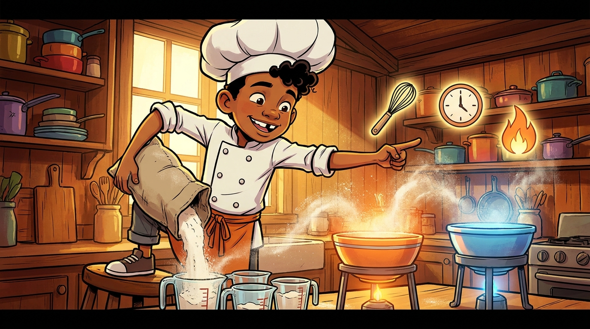
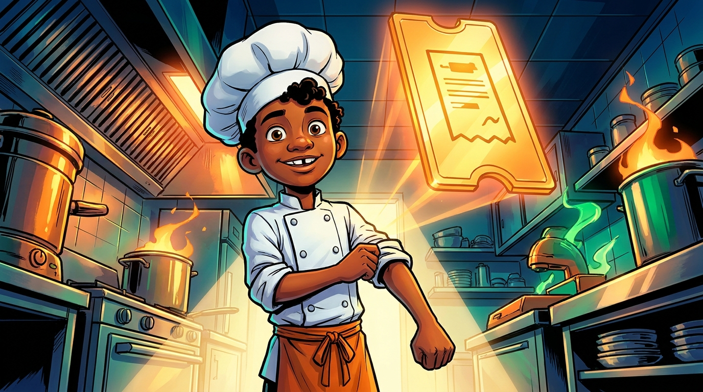
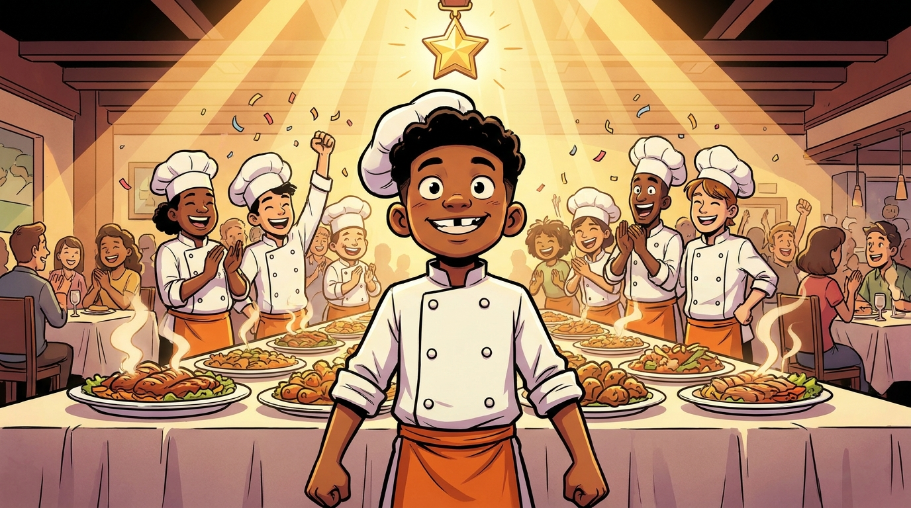

Master Chef Kitchen: The Recipe Rescue
The flagship restaurant Aurora is slammed on its biggest night, and every locked station now answers only to precise fraction math. As the rising chef Kai, you must interpret division of fractions, portion ingredients, and scale recipes under pressure — before the dinner service collapses. Watch for the optional ⭐ Chef’s Challenge in each act for extra credit.
The Locked Pantry

The Big Order

The Banquet


Service Saved — Five Stars!
Aurora pulled off its biggest night. You interpreted division of fractions, portioned with reciprocals, and scaled every recipe with precision. The critics are raving, and the head chef just put your name on the specials board, Chef Kai.